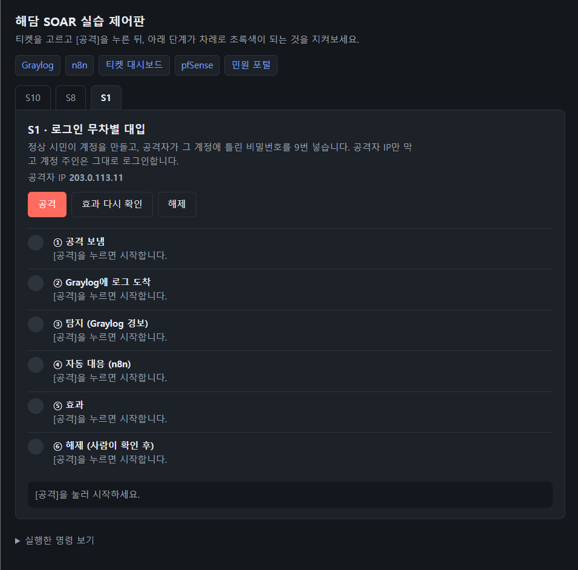
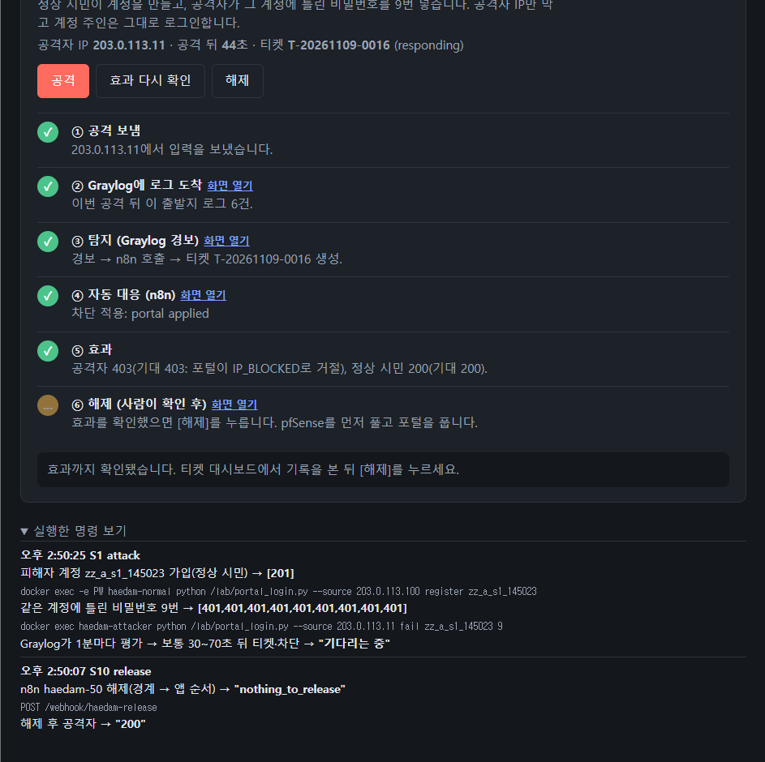
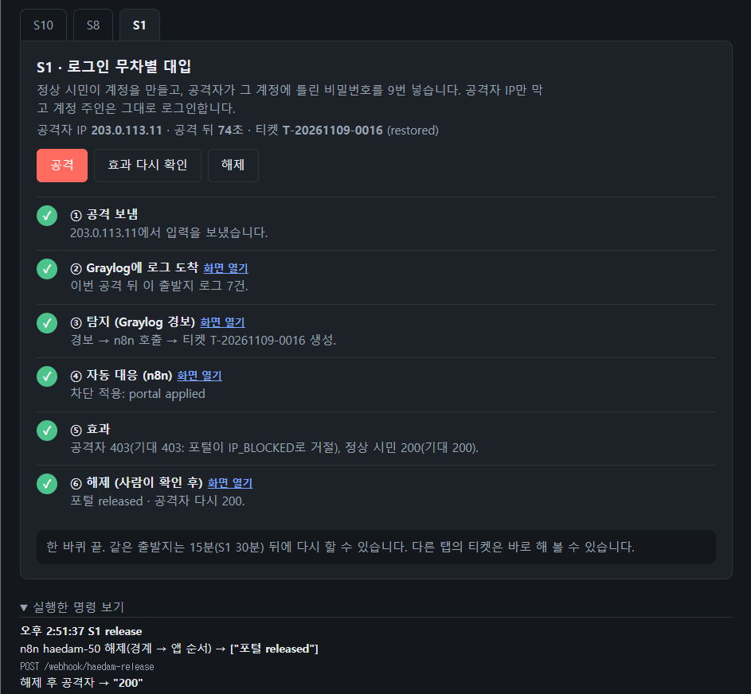
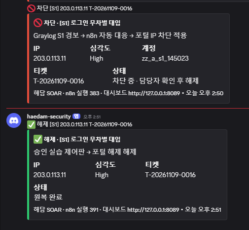

실제 사이버 공격을 모사해 보내면, Graylog가 탐지하고 n8n이 포털·pfSense에 차단을 넣고, 확인 뒤 사람이 해제합니다. 제어판은 이 과정을 티켓마다 6단계로 보여 주고 5초마다 자동으로 갱신됩니다.
이 문서는 소개용입니다. 흐름과 화면만 봅니다. 직접 버튼을 눌러 보려면 저장소를 받아 스택(컨테이너 14개)을 띄워야 합니다.
한눈에: 공격 한 번에서 해제까지
아래는 S1(로그인 무차별 대입)을 예로 한 바퀴 돈 화면입니다. 티켓마다 6단계가 한 화면에 모여 있고, 5초마다 자동으로 갱신됩니다.

여기에 captures/panel-1-start.png
1시작 화면. 위쪽 파란 글씨(Graylog · n8n · 티켓 대시보드 · pfSense · 민원 포털)를 누르면 그 도구가 새 탭으로 열려 직접 확인할 수 있고, S10 · S8 · S1 탭을 누르면 그 케이스 공격을 바로 돌립니다. 아래 6단계가 모두 보입니다.

여기에 captures/panel-2-effect.png
2[공격] 뒤. 단계가 위에서부터 초록으로 바뀌고, ⑤ 효과에 공격자 403·정상 시민 200이 곧바로 떠서 막혔는지 한눈에 보입니다. 각 단계의 화면 열기로 Graylog·n8n에서 근거를 보고, 맨 아래 실행한 명령에 실제로 돌아간 명령이 남습니다.

여기에 captures/panel-3-done.png
3효과를 확인한 뒤 ⑥ 해제를 누르면 넣었던 차단을 되돌리고 공격자가 다시 200. 한 바퀴 끝. 차단은 공격자 IP에만 걸려, 피해자 계정과 다른 시민은 내내 정상입니다.

여기에 captures/panel-4-alert.png
차단과 해제는 Discord로도 바로 알림이 갑니다. IP·계정·티켓·상태가 함께 와서 화면을 안 보고 있어도 상황을 압니다.